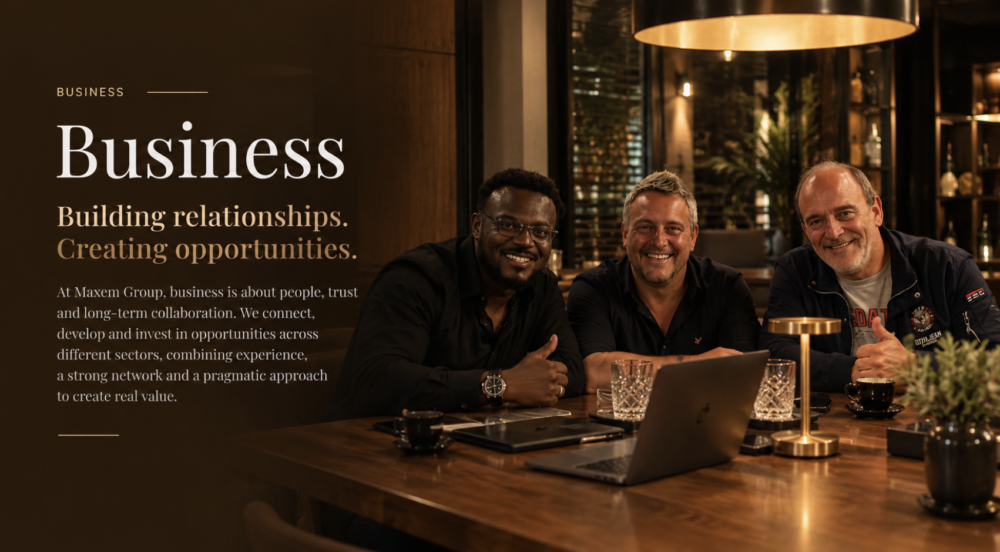
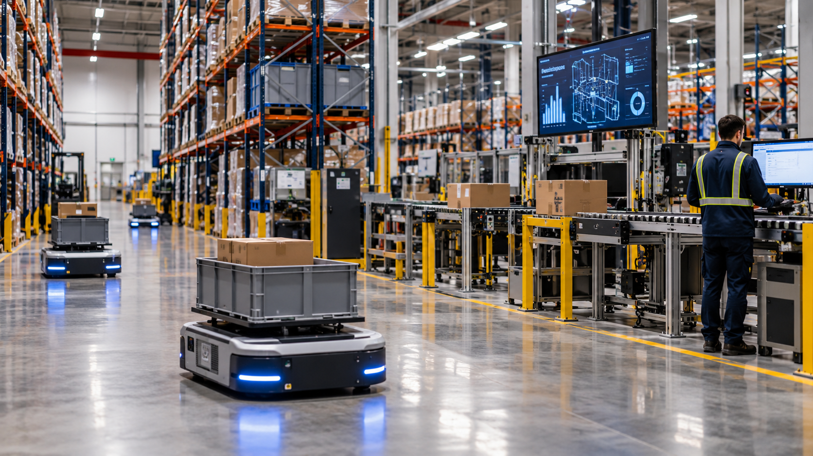
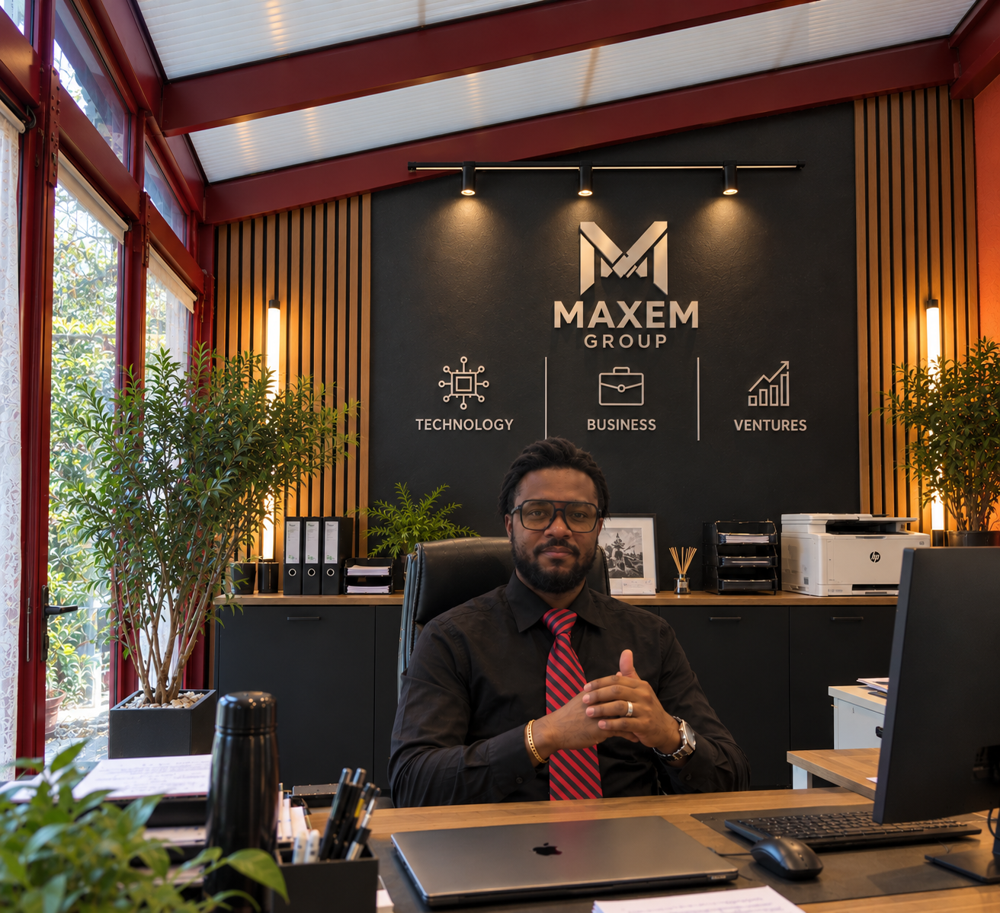

About
My journey began with a higher education degree in Business Science, specialising in Supply Chain Management, following the same academic path as my father. Growing up in an entrepreneurial family, I developed an early understanding of business, logistics and entrepreneurship.
At a certain point, I decided to take my own path and take the risk of entrepreneurship. I knew that building something of your own comes with uncertainty, but also with the opportunity to create, learn and grow through your own experience.
Over the years, I followed my own path and gained extensive experience across different areas of supply chain and business operations. These experiences gave me a practical understanding of how businesses operate and where processes can be improved.
Alongside that journey, I always had another passion: IT and technology. What started as a personal interest gradually developed into a field that I continued to explore and develop.
As technology became increasingly important within modern supply chains, I saw an opportunity to bring these two worlds together. Supply chain expertise and technology became more than separate interests — they became the foundation for building smarter business solutions.
That vision became the foundation of Maxem Group. Together with our experienced team, we combine supply chain knowledge with technology to develop practical and innovative solutions that address real business challenges.
This vision is embodied in SSERP, our Smart Supply Enterprise Resource Planning platform, designed to bring enterprise processes and supply chain operations together in one connected environment.
At Maxem Group, we believe technology should serve the business — not complicate it. Our goal is to create smarter, more connected and more efficient operations that deliver lasting value for our clients.

Business
At Maxem Group, we combine supply chain expertise with technology to create smarter, more connected and more efficient operations.
From automation and robotics to data and system integration, we focus on technologies that improve processes and support better business decisions.
Our vision is to connect people, processes and systems through intelligent enterprise solutions — creating a stronger link between technology and the supply chain.
Technology
Connecting technology with the supply chain.
At Maxem Group, we believe technology should make businesses smarter, more connected and more efficient.
We combine supply chain expertise with digital solutions to improve processes, connect systems and support better decision-making.
Automation plays an important role in modern supply chains. From warehouse automation and robotics to intelligent workflows, we explore technologies that reduce manual work, improve accuracy and increase operational efficiency.
Data is at the heart of every connected operation. By bringing together information from different systems and processes, businesses can gain better visibility, identify bottlenecks and make faster, more informed decisions.
From ERP - Enterprise Resource Planning and WMS - Warehouse Management System solutions to automation, analytics and connected systems, Maxem Group aims to build a stronger link between technology and the supply chain — creating operations that are more flexible, scalable and ready for the future.
This vision comes together in SSERP — our Smart Supply Enterprise Resource Planning platform, designed to connect business processes, supply chain operations and technology in one integrated environment.
SSERP brings together ERP and WMS capabilities with data, process management and system integration, helping businesses gain better visibility, improve efficiency and make smarter decisions.

